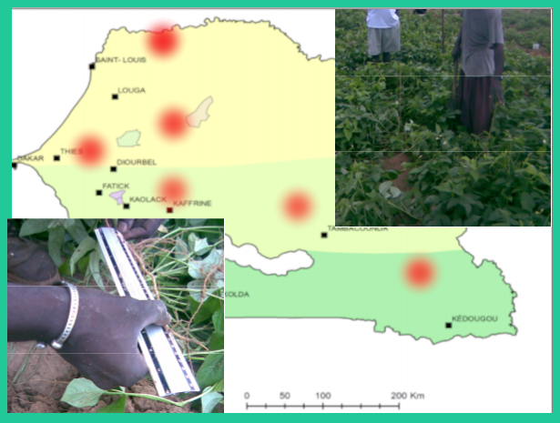
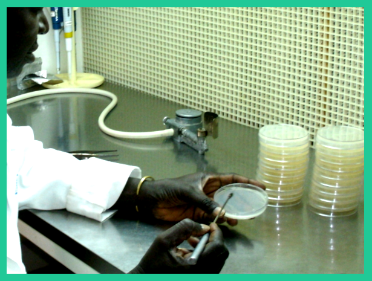
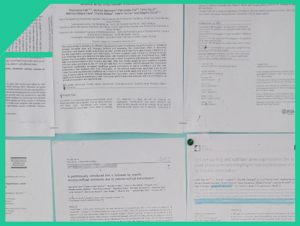
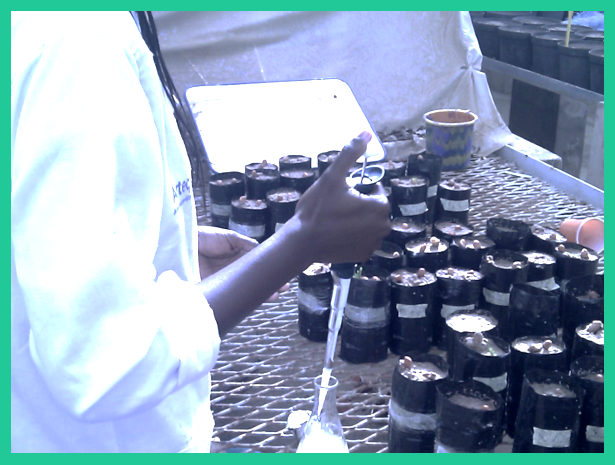
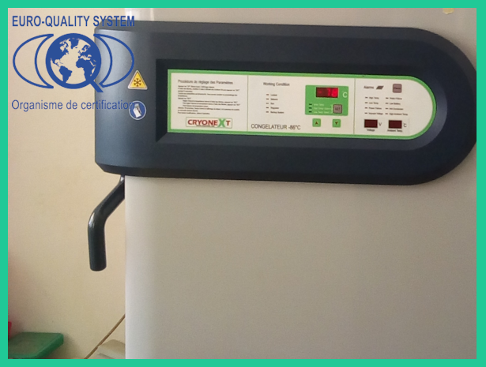
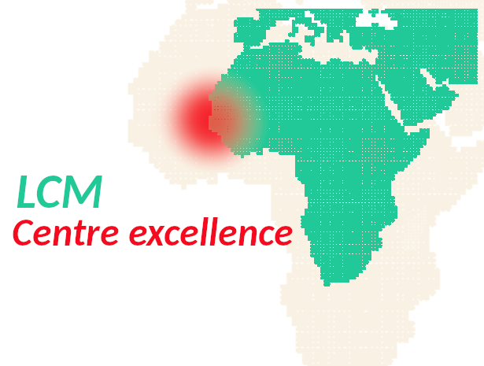

Recognized expertise of the LCM
The LCM conducts research programs or projects oriented to promote innovations in the agricultural-agro-food field and provide services to the community by contributing to the training of students and professionals in scientific and technical research professions.
The inoculation of symbiotic microorganisms (rhizobia and mycorrhizal fungi) is an agro-ecological practice, low-cost, environment-friendly. Today, this technology is not yet practiced on a large scale in West Africa, due to lack of promotion and insufficient knowledge about the behavior of microorganisms in the soil.
LCM researchers contribute to scientific activities organized within the Bel Air research center, in Senegal, in the sub-region and internationally.